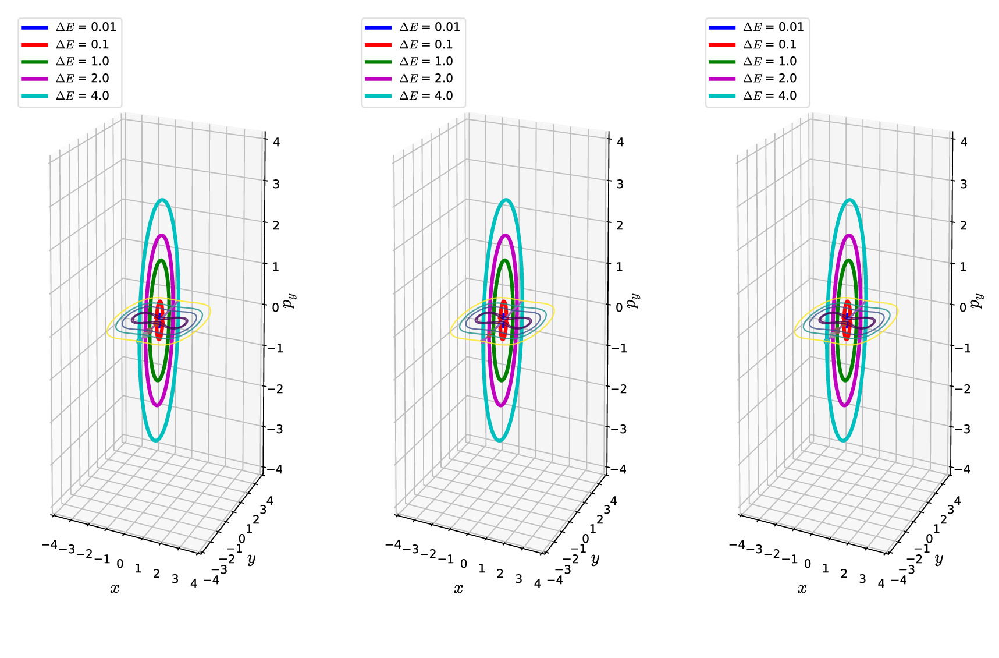
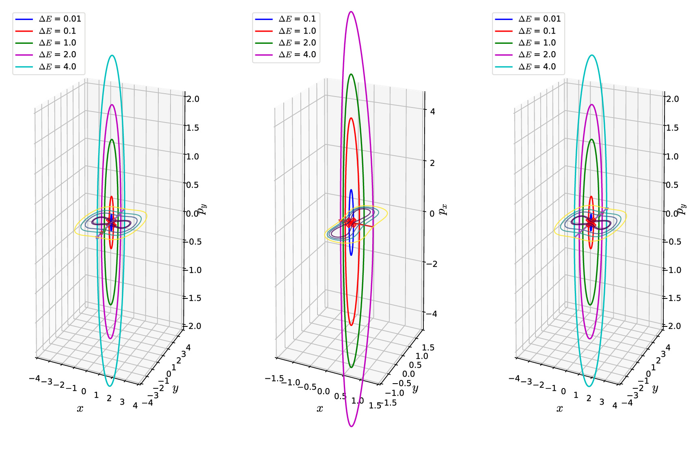

---
redirect_from:
  - "/05/paper-new"
title: |-
  Naik paper
author: S. Naik
pagenum: 4
prev_page:
  url: /04/test.html
next_page:
  url: /06/caldera-1_new3.html
suffix: .md
search: x y energy v methods hamiltonian frac upo space method px py equation unstable periodic point model coordinates trajectories file paper examples numerical orbits total three potential turning systems phase between cite using equipotential configuration based difference initial small begin end computing package contour opposite directions condition left right rm db invariant manifold upos either source combination while e described implemented kinetic fig allinonecoupled equations where turn trajectory tpcd approx correction continuation amplitude quartic mathcal h lambda research acknowledge stable n dimensional less dimension degrees freedom analysis starting dynamical uposham meant providing specified lack found software written our open shows
title: "UPOsHam: A Python package for computing unstable periodic orbits in two degrees of freedom Hamiltonian systems"
authors:
- affiliation: 1
  name: Wenyang Lyu
  orcid: 0000-0003-2570-9879
- affiliation: 1
  name: Shibabrat Naik
  orcid: 0000-0001-7964-2513
- affiliation: 1
  name: Stephen Wiggins
  orcid: 0000-0002-5036-5863
output:
  pdf_document:
    fig_caption: yes
    fig_height: 3
  html_document:
    fig_caption: yes
    fig_height: 3
bibliography: paper.bib
tags:
- Hamiltonian dynamics
- Dynamical systems
- Chemical reaction dynamics
- Unstable periodic orbits
- State transition matrix
- Differential correction
- Numerical continuation
- Turning point
affiliations:
- index: 1
  name: School of Mathematics, University Walk, University of Bristol, Clifton BS8 1TW, Bristol, United Kingdom
comment: "***PROGRAMMATICALLY GENERATED, DO NOT EDIT. SEE ORIGINAL FILES IN /content***"
---

    <main class="jupyter-page">
    <div id="page-info"><div id="page-title">Naik paper</div>
<div id="page-author">S. Naik</div>
</div>
    <div class="jb_cell">

<div class="cell border-box-sizing text_cell rendered"><div class="inner_cell">
<div class="text_cell_render border-box-sizing rendered_html">
<h2 id="Statement-of-Need">Statement of Need<a class="anchor-link" href="#Statement-of-Need"> </a></h2><p>In Hamiltonian systems the fundamental phase space structure that partitions dynamically disparate trajectories and mediates transition between multi-stable regions is an invariant manifold. In a 2N dimensional Hamiltonian phase space, the invariant manifold has 2 less dimension than the phase space and is anchored to the normally hyperbolic invariant manifold which has 3 less dimension. This becomes an unstable periodic orbit (UPO) for 2 degrees of freedom or four dimensional phase space {% cite wiggins_role_2016 --file paper %}. Since the UPO forms the basis for partitioning trajectories, hence their computation and stability analysis is the starting point for dynamical systems analysis. UPOsHam is meant to serve this purpose by providing examples of how to implement numerical methods for computing the unstable periodic orbits (UPOs) at any specified total energy as long as their existence is guaranteed. Even though, there is no lack of numerical methods for computing UPOs, we have found that they either lack in reproducibility, or have steep learning curve for using the software, or have been written using closed source software, and at times combination of these. Our aim is to provide an open source package that implements some of the standard methods and shows the results in the context of model problems. This is meant as a starting point to integrate other numerical methods in an open source package such that UPOs computed in dynamical systems papers can be reproduced with minimal tweaking while providing an exploratory environment to learn and develop the underlying methods.</p>
<h2 id="Summary">Summary<a class="anchor-link" href="#Summary"> </a></h2><p>This Python package, UPOsHam, is a collection of three methods for computing unstable periodic orbits in Hamiltonian systems that model a diverse array of problems in physical sciences and engineering. The unstable periodic orbits exist in the bottleneck of the equipotential line $V(x,y) = E$ and project as lines on the configuration space $(x,y)$. The three methods described below have been implemented for three Hamiltonian systems of the form kinetic plus potential energy and are described in <a href="#examples">\S:Examples</a>. The scripts are written as demonstration of how to modify and adapt the code for a problem of interest.</p>
<p>The computed unstable periodic orbits using the three methods are compared for a model problem in Figure \ref{fig:allinone_coupled}.</p>
<h3 id="Features:-Available-Methods">Features: Available Methods<a class="anchor-link" href="#Features:-Available-Methods"> </a></h3><p>In this package, the user has the option to choose between the three methods described below. These are implemented in separate scripts with functions that can be modified to define the total energy (Hamiltonian), potential energy, vector field, Jacobian, variational equations {% cite Parker_1989 --file paper %}.</p>
<p><strong>Turning point (TP)</strong></p>
<p>This method is based on finding the UPO by detecting trajectories initialized on the equipotential contour ($V(x,y) = E$ where $V(x,y)$ is the potetial energy function and $E$ is the total energy) that turn in the opposite directions {% cite Pollak_1980 --file paper %}. This method relies on the fact that for Hamiltonians of the form kinetic plus potential energy the UPO is the limiting trajectory that bounces back and forth between the equipotential contour corresponding to the given total energy. So to converge on this limiting trajectory, the turning point method iteratively decreases the gap between the bounding trajectories that turn in the opposite directions. Detection of turning is done using a dot product condition which leads to stalling of the method beyond a certain tolerance (typically $10^{-6}$ in the examples here.)</p>
<p><strong>Turning point based on configuration difference  (TPCD)</strong></p>
<p>Based on the turning point approach, we have implemented a <strong>new method</strong> which shows stable convergence and does not rely on the dot product formula. Suppose we have found two initial conditions on a given equipotential contour and they turn in the opposite directions. If the difference in $x$-coordinates is small ($\approx 10^{-2}$), the generated trajectories will approach the UPO from either sides. If the difference in $x$-coordinates is large, we can integrate the Hamilton's equations for a guess time interval and find the turning point (event using ODE event detection) at which the trajectories bounce back from the far side of the equipotential contour in opposite directions. We choose these two points as our initial guess and the difference of $x$-coordinates become small now. Without loss of generality, this method can be modified to either pick the difference of $y$-coordinates or a combination of $x$ and $y$ coordinates. This choice will depend on the orientation of the potential energy surface's bottleneck in the configuration space.</p>
<p><strong>Differential correction and numerical continuation (DCNC)</strong></p>
<p>This method is based on small ($\approx 10^{-5}$) corrections to the initial conditions of an UPO and continuing to desired total energy. The procedure is started from the linear solutions of the Hamilton's equations and which generates a small amplitude ($\approx 10^{-5}$) UPO. This is fed into the procedure that calculates correction to the initial condition based on error in the terminal condition of the UPO. This leads to convergence within 3 steps in the sense of the trajectory returning to the initial condition. Once a small amplitude UPO is obtained, numerical continuation increases the amplitude and correspondingly total energy, while a combination of bracketing and bisection method computes the UPO at the desired energy for a specified tolerance {% cite naik2019bfinding Koon2011 --file paper %}.</p>
<h2 id="Examples-{#examples}">Examples {#examples}<a class="anchor-link" href="#Examples-{#examples}"> </a></h2><p>Consider the following two degrees-of-freedom Hamiltonian model where $x, y$ are configuration space coordinates and $p_x,p_y$ are corresponding momenta, $V(x,y)$ is the potential energy, and $T(x,y)$ is the kinetic energy.</p>
<h3 id="Uncoupled-quartic-Hamiltonian">Uncoupled quartic Hamiltonian<a class="anchor-link" href="#Uncoupled-quartic-Hamiltonian"> </a></h3>\begin{equation}
    \mathcal{H}(x,y,p_x,p_y) = \frac{p_x^2}{2} - \alpha \frac{x^2}{2} + \beta \frac{x^4}{4} + \frac{\omega}{2}\left( p_y^2 + y^2 \right)
\end{equation}<h3 id="Coupled-quartic-Hamiltonian">Coupled quartic Hamiltonian<a class="anchor-link" href="#Coupled-quartic-Hamiltonian"> </a></h3>\begin{equation}
    \mathcal{H}(x,y,p_x,p_y) = \frac{p_x^2}{2} - \alpha \frac{x^2}{2} + \beta \frac{x^4}{4} + \frac{\omega}{2}\left( p_y^2 + y^2 \right) + \frac{\epsilon}{2}(x - y)^2
\end{equation}<h3 id="DeLeon-Berne-Hamiltonian-{#dbham}">DeLeon-Berne Hamiltonian {#dbham}<a class="anchor-link" href="#DeLeon-Berne-Hamiltonian-{#dbham}"> </a></h3><p>This Hamiltonian has been studied as a model of isomerization of a single molecule that undergoes conformational change {% cite Deleon_Berne_1981 DeLeon_Marston_1989 --file paper %} and exhibits regular and chaotic dynamics relevant for chemical reactions.</p>
\begin{equation}
\mathcal{H}(x,y,p_x,p_y) = T(p_x, p_y) + V_{\rm DB}(x, y) = \frac{p_x^2}{2m_A} + \frac{p_y^2}{2m_B} + V_{\rm DB}(x, y)
\end{equation}<p><br>
where the potential energy function $V_{\rm DB}(x,y)$ is</p>
\begin{equation}
\begin{aligned}
V_{\rm DB}(x,y) = &amp;  V(x) + V(y) + V(x,y) \\
V(y) = &amp; 4y^2(y^2 - 1) + \epsilon_s \\
V(x) = &amp; D_x\left[ 1 - \exp(-\lambda x) \right]^2 \\
V(x,y) = &amp; 4y^2(y^2 - 1)\left[ \exp(-\zeta \lambda x) - 1 \right]
\end{aligned}
\label{eqn:pot_energy_db}
\end{equation}<p>The parameters in the model are $m_A, m_B$ which represent mass of the isomers, while $\epsilon_s, D_x$ denote the energy of the saddle, dissociation energy of the Morse oscillator, respectively, and will be kept fixed in this study, $\lambda, \zeta$ denote the range of the Morse oscillator and coupling parameter between the $x$ and $y$ configuration space coordinates, respectively.</p>
<h2 id="Visualization:-Unstable-periodic-orbits">Visualization: Unstable periodic orbits<a class="anchor-link" href="#Visualization:-Unstable-periodic-orbits"> </a></h2><p>{#fig:allinone_coupled  width=100%}</p>
<p>{#fig:allinone_newmethod width=100%}</p>
<h2 id="Relation-to-ongoing-research-projects">Relation to ongoing research projects<a class="anchor-link" href="#Relation-to-ongoing-research-projects"> </a></h2><p>We are developing geometric methods of phase space transport in the context of chemical reaction dynamics that rely heavily on identifying and computing the unstable periodic orbits. Manuscript related to the <a href="#dbham">De Leon-Berne model</a> is under preparation.</p>
<h2 id="Acknowledgements">Acknowledgements<a class="anchor-link" href="#Acknowledgements"> </a></h2><p>We acknowledge the support of EPSRC Grant No. EP/P021123/1 and Office of Naval Research (Grant No. N00014-01-1-0769). The authors would like to acknowledge the London Mathematical Society and School of Mathematics at the University of Bristol for supporting the undergraduate research bursary 2019. We acknowledge contributions from Shane Ross for writing the early MATLAB version of the differential correction and numerical continuation code.</p>
<h2 id="References">References<a class="anchor-link" href="#References"> </a></h2><p>{% bibliography --file paper --cited %}</p>

</div>
</div>
</div>
</div>

 


    </main>
    